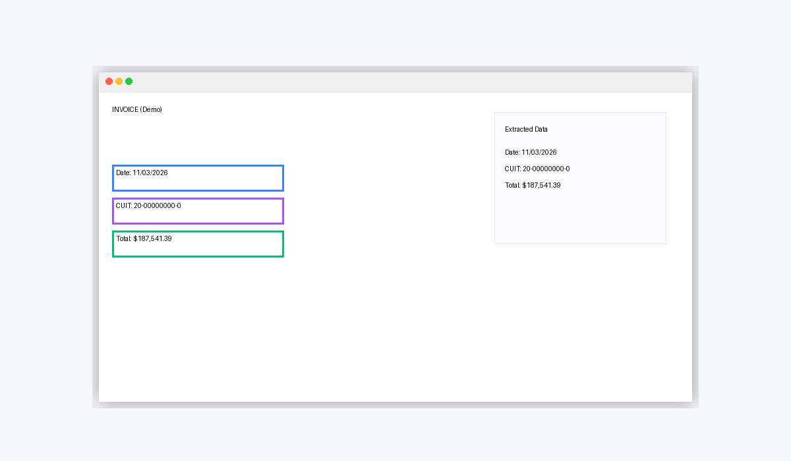
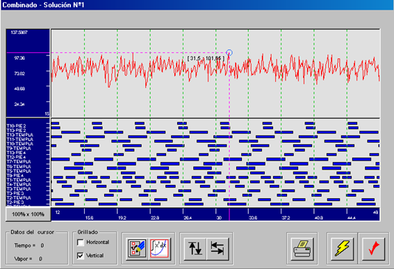
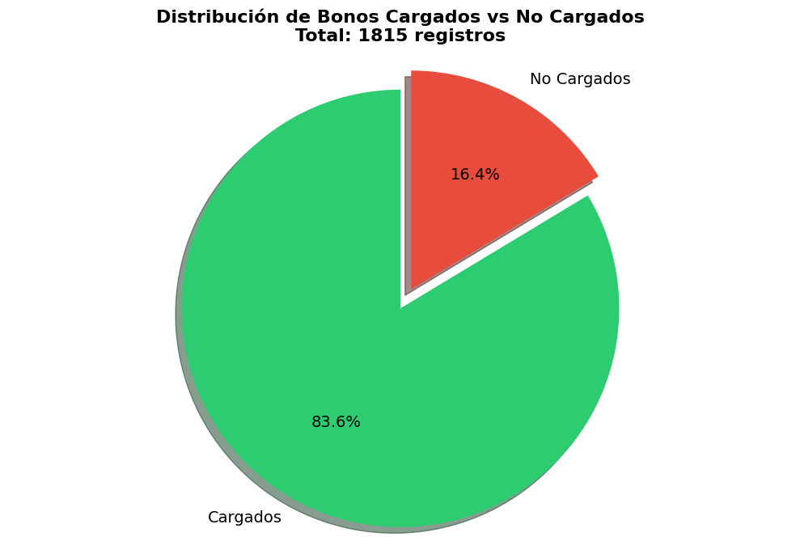

25+ Years
Hands-on systems and process experience
Helping companies transform manual processes into automated systems using Python, data analysis, modern dashboards and custom software solutions.
25+ Years
Hands-on systems and process experience
Business First
Solutions built around real operations
Automation Focus
Reduced repetitive work and delays
Data Confidence
Structured reporting and data controls
Manual workflows drain productive time, increase error risk, and delay decision-making. DFA Systems redesigns these flows into clear and reliable systems.
Teams repeatedly normalize inconsistent files by hand.
Weekly and monthly reports depend on manual copy-paste.
Data is split across tools with no operational integration.
Cross-checking invoices, totals and records consumes senior hours.
Automate repetitive administrative and operational tasks to reduce manual effort.
Learn MoreBuild reliable data flows, KPI views and reporting models for faster decisions.
Learn MoreInternal tools tailored to your process reality, not generic templates.
Learn MoreAnalyze bottlenecks, data quality issues and automation opportunities.
Learn MoreDecades of solving business workflow friction with VB.NET, Excel, DBF, SQL Server and Access now combined with Python, Pandas and Power BI for scalable automation.
Selected case studies

Python · Email Processing · PDF Extraction
Automated workflow for invoice email intake, PDF data extraction, validation, and structured registration.
View Project
Optimization · Scheduling · Industrial Analytics
Industrial optimization workflow for sequencing operations, evaluating scenarios, and improving execution planning.
View Project
Python · Pandas · Excel Reconciliation
Automated reconciliation workflow that validates Excel datasets, detects mismatches, and generates structured outputs.
View ProjectCurrent specialization growth includes Oil & Gas fundamentals training, Power BI refinement, and Python/Pandas workflows for structured operational data. Positioning is practical, progressive and evidence-based.
Understand process pain points, stakeholders and expected outcomes.
Map current flow, bottlenecks, controls and data dependencies.
Define architecture, data model and realistic implementation path.
Build automation scripts, internal tools and reporting layers.
Deploy, document, and iterate based on operational feedback.
Reach out to discuss automation, data workflows, reporting improvements and custom internal software initiatives.